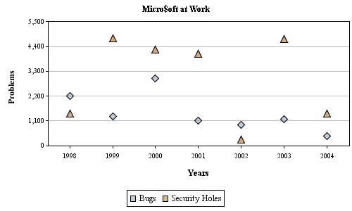
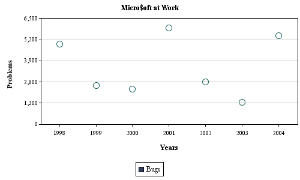
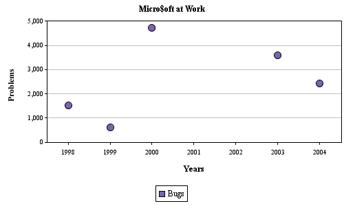

| Example |
| Here is a simple Point Chart. Notice that when declaring the data set, I set the ChartType to ChartType.POINT. |
|
String[] xAxisLabels= { "1998", "1999", "2000", "2001", "2002", "2003", "2004" }; String xAxisTitle= "Years"; String yAxisTitle= "Problems"; String title= "Micro$oft at Work"; DataSeries dataSeries = new DataSeries( xAxisLabels, xAxisTitle, yAxisTitle, title ); double[][] data= new double[][]{ { 250, 45, -36, 66, 145, 80, 55 }, { 150, 15, 6, 62, -54, 10, 84 } }; String[] legendLabels= { "Bugs", "Security Holes" }; Paint[] paints= TestDataGenerator.getRandomPaints( 2 ); Shape[] shapes= { PointChartProperties.SHAPE_DIAMOND, PointChartProperties.SHAPE_TRIANGLE }; boolean[] fillPointFlags= { true, true }; Paint[] outlinePaints= { Color.black, Color.black }; PointChartProperties pointChartProperties= new PointChartProperties( shapes, fillPointFlags, outlinePaints ); AxisChartDataSet axisChartDataSet= new AxisChartDataSet( data, legendLabels, paints, ChartType.POINT, pointChartProperties ); dataSeries.addIAxisChartDataSet( axisChartDataSet ); ChartProperties chartProperties= new ChartProperties(); AxisProperties axisProperties= new AxisProperties(); LegendProperties legendProperties= new LegendProperties(); AxisChart axisChart= new AxisChart( dataSeries, chartProperties, axisProperties, legendProperties, 500, 300 ); |
|  |
| Shapes |
|
The PointChartProperties Object contains four Shape definition constants for use, although you can
create your own via the Shape interface. There are several properties associated with the shapes, namely:
outline color and a flag indicating whether to fill the shape or not. If you do not want to fill the
point with color, be aware the fill color specified on the data set will be used as the outline Paint. The example below sets the outline Paint to be red, but also sets the fill point flag to false. This means the fill Paint will be used as the outline Paint. |
|
Shape[] shapes= { PointChartProperties.SHAPE_CIRCLE }; boolean[] fillPointFlags= { false }; Paint[] outlinePaints= { Color.red }; PointChartProperties pointChartProperties= new PointChartProperties( shapes, fillPointFlags, outlinePaints ); |
|  |
| Remember, the fill color will be used as the outline color when the fill point flags are false. |
| Null Values |
| You can show missing values on Point Charts by using Double.NaN values in your dataset. |
|
data[ 0 ][ 3 ]= Double.NaN data[ 0 ][ 4 ]= Double.NaN |
|  |